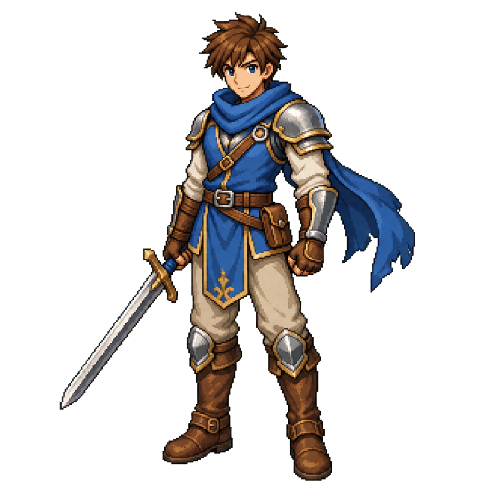
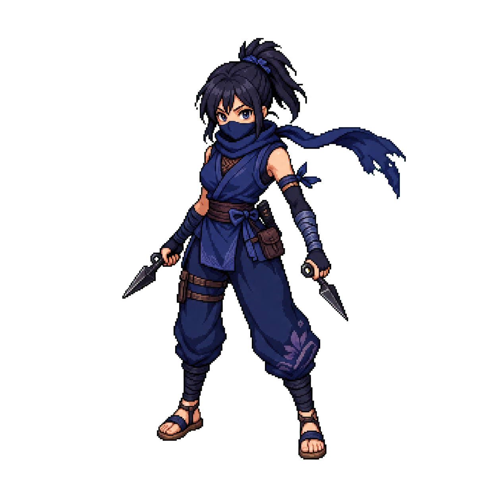
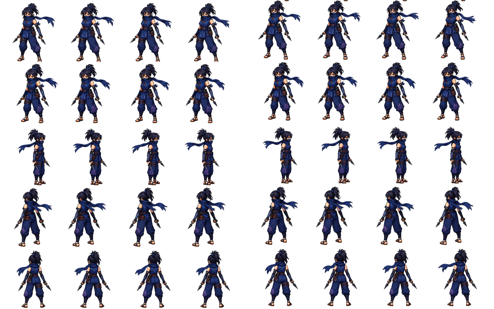
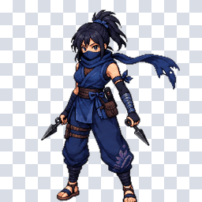
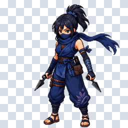
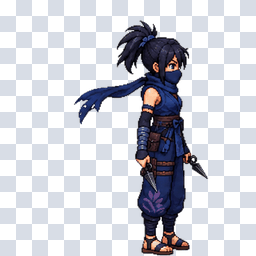
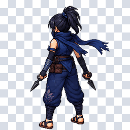
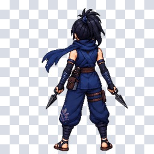

Direct Transparent D Additional Character QA
D prompt was tested on three additional source characters. Blocked rows mean the runner refused to accept opaque RGB/checkerboard output as direct transparent success.
| Character | Job ID | Status | Near transparent ratio | Edge opaque ratio |
|---|---|---|---|---|
| Basic Young Male Hero | codex-job-2026-06-27T18-48-08-090Z | blocked | --- | --- |
| Profession Young Female Ninja | codex-job-2026-06-27T18-51-29-686Z | alpha-pass | 0.7469-0.8196 | 0.0374-0.0518 |
| Monster Baby Dragon | codex-job-2026-06-27T19-02-13-046Z | blocked | --- | --- |
Basic Young Male Hero

{
"status": "blocked",
"reasonKind": "unknown",
"userMessage": "Built-in image generation produced an RGB image with a drawn transparency preview instead of native alpha, so the direct-transparent sprite contract could not be satisfied.",
"suggestion": "Retry with an image generation path that supports true alpha output, or explicitly allow chroma-key generation plus local alpha removal."
}Profession Young Female Ninja


| front | front three-quarter | side | back three-quarter | back |
|---|---|---|---|---|
 |  |  |  |  |
Monster Baby Dragon
{
"status": "blocked",
"reasonKind": "unknown",
"userMessage": "The available built-in image generation path produced opaque RGB PNGs instead of direct transparent alpha sprites, so the direct-transparent contract could not be satisfied.",
"suggestion": "Retry with a generator path that supports native transparent PNG alpha for sprite sheets, or change the job to allow an explicit chroma-key/background-removal workflow."
}